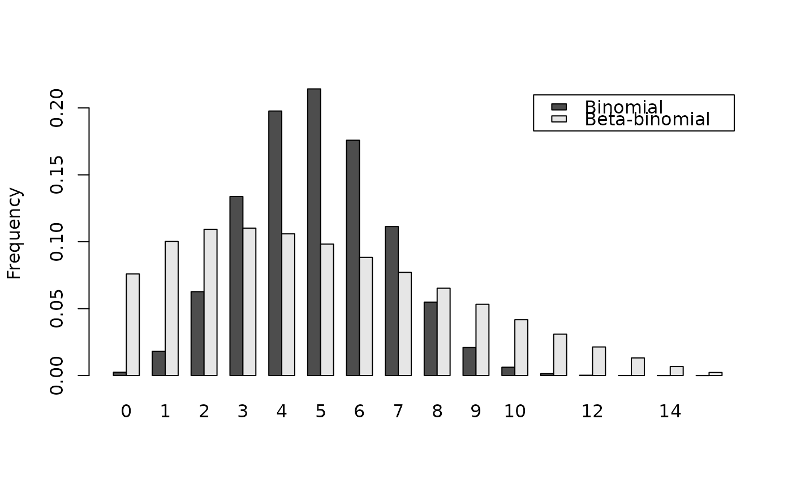

Density, distribution function, quantile function and random generation for
the beta-binomial distribution with parameters size, prob,
theta, shape1, shape2. This distribution corresponds to
an overdispersed binomial distribution.
dbetabinom(x, size, prob, theta, shape1, shape2, log = FALSE)
pbetabinom(
q,
size,
prob,
theta,
shape1,
shape2,
lower.tail = TRUE,
log.p = FALSE
)
qbetabinom(
p,
size,
prob,
theta,
shape1,
shape2,
lower.tail = TRUE,
log.p = FALSE
)
rbetabinom(n, size, prob, theta, shape1, shape2)Vector of quantiles.
Number of trials.
Probability of success on each trial.
Aggregation parameter (theta = 1 / (shape1 + shape2)).
Shape parameters.
Logical; if TRUE, probabilities p are given as log(p).
Logical; if TRUE (default), probabilities are \(P[X \le x]\) otherwise, \(P[X > x]\).
Vector of probabilities.
Number of observations.
dbetabinom gives the density, pbetabinom gives the distribution
function, qbetabinom gives the quantile function and rbetabinom
generates random deviates.
Be aware that in this implementation theta = 1 / (shape1 +
shape2). prob and theta, or shape1 and
shape2 must be specified. if theta = 0, use *binom family
instead.
dbetabinom in the package emdbook
where the definition of theta is different.
# Compute P(25 < X < 50) for X following the Beta-Binomial distribution
# with parameters size = 100, prob = 0.5 and theta = 0.35:
sum(dbetabinom(25:50, size = 100, prob = 0.5, theta = 0.35))
#> [1] 0.3054911
# When theta tends to 0, dbetabinom outputs tends to dbinom outputs:
sum(dbetabinom(25:50, size = 100, prob = 0.5, theta = 1e-7))
#> [1] 0.5397943
sum(dbetabinom(25:50, size = 100, shape1 = 1e7, shape2 = 1e7))
#> [1] 0.5397944
sum(dbinom(25:50, size = 100, prob = 0.5))
#> [1] 0.5397945
# Example of binomial and beta-binomial frequency distributions:
n <- 15
q <- 0:n
p1 <- dbinom(q, size = n, prob = 0.33)
p2 <- dbetabinom(q, size = n, prob = 0.33, theta = 0.22)
res <- rbind(p1, p2)
dimnames(res) <- list(c("Binomial", "Beta-binomial"), q)
barplot(res, beside = TRUE, legend.text = TRUE, ylab = "Frequency")

# Effect of the aggregation parameter theta on probability density:
thetas <- seq(0.001, 2.5, by = 0.001)
density1 <- rep(sum(dbinom(25:50, size = 100, prob = 0.5)), length(thetas))
density2 <- sapply(thetas, function(theta) {
sum(dbetabinom(25:50, size = 100, prob = 0.5, theta = theta))
})
plot(thetas, density2, type = "l",
xlab = expression("Aggregation parameter ("*theta*")"),
ylab = "Probability density between 25 and 50 (size = 100)")
lines(thetas, density1, lty = 2)